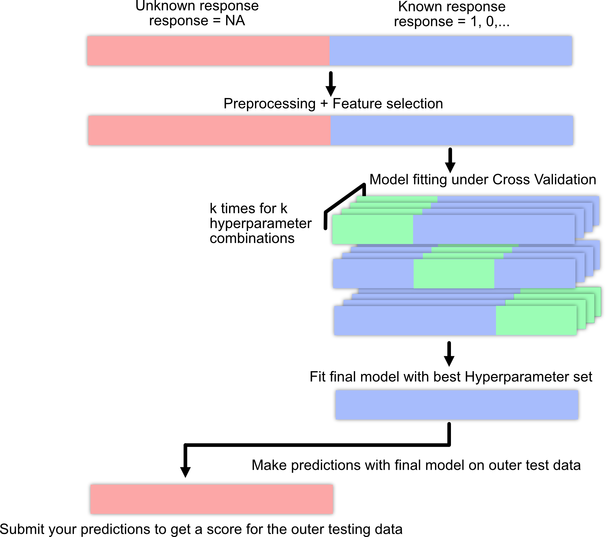
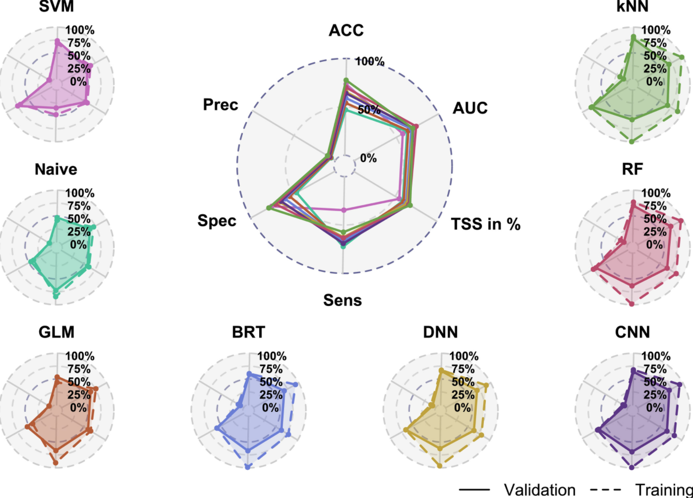

devtools::install_github(repo = "florianhartig/EcoData", subdir = "EcoData",
dependencies = TRUE, build_vignettes = FALSE)Appendix A — Datasets
You can download the data sets we use in the course here (ignore browser warnings) or by installing the EcoData package:
A.1 Machine learning pipeline / workflow

A.2 Titanic
The data set is a collection of Titanic passengers with information about their age, class, sex, and their survival status. The competition is simple here: Train a machine learning model and predict the survival probability.
The Titanic data set is very well explored and serves as a stepping stone in many machine learning careers. For inspiration and data exploration notebooks, check out this kaggle competition.
Response variable: “survived”
A minimal working example:
- Load data set:
library(EcoData)
data(titanic_ml)
titanic = titanic_ml
summary(titanic) pclass survived name sex
Min. :1.000 Min. :0.0000 Length :1309 female:466
1st Qu.:2.000 1st Qu.:0.0000 N.unique :1307 male :843
Median :3.000 Median :0.0000 N.blank : 0
Mean :2.295 Mean :0.3853 Min.nchar: 12
3rd Qu.:3.000 3rd Qu.:1.0000 Max.nchar: 82
Max. :3.000 Max. :1.0000
NAs :655
age sibsp parch ticket
Min. : 0.1667 Min. :0.0000 Min. :0.000 CA. 2343: 11
1st Qu.:21.0000 1st Qu.:0.0000 1st Qu.:0.000 1601 : 8
Median :28.0000 Median :0.0000 Median :0.000 CA 2144 : 8
Mean :29.8811 Mean :0.4989 Mean :0.385 3101295 : 7
3rd Qu.:39.0000 3rd Qu.:1.0000 3rd Qu.:0.000 347077 : 7
Max. :80.0000 Max. :8.0000 Max. :9.000 347082 : 7
NAs :263 (Other) :1261
fare cabin embarked body
Min. : 0.000 :1014 : 2 Min. : 1.0
1st Qu.: 7.896 C23 C25 C27 : 6 C:270 1st Qu.: 72.0
Median : 14.454 B57 B59 B63 B66: 5 Q:123 Median :155.0
Mean : 33.295 G6 : 5 S:914 Mean :160.8
3rd Qu.: 31.275 B96 B98 : 4 3rd Qu.:256.0
Max. :512.329 C22 C26 : 4 Max. :328.0
NAs :1 (Other) : 271 NAs :1188
home.dest
:564
New York, NY : 64
London : 14
Montreal, PQ : 10
Cornwall / Akron, OH: 9
Paris, France : 9
(Other) :639 - Impute missing values (not our response variable!):
library(missRanger)
library(dplyr)
set.seed(123)
titanic_imputed = titanic |> select(!any_of(c("name", "ticket", "cabin", "boat", "home.dest")))
titanic_imputed = missRanger::missRanger(data = titanic_imputed |>
select(-survived), verbose = 0)
titanic_imputed$survived = titanic$survived- Split into training and test set:
train = titanic_imputed[!is.na(titanic$survived), ]
test = titanic_imputed[is.na(titanic$survived), ]- Train model:
model = glm(survived~., data = train, family = binomial())- Predictions:
preds = predict(model, data = test, type = "response")
head(preds) 561 321 1177 1098 1252 1170
0.7857118 0.3509419 0.0157811 0.1181712 0.1367818 0.1132234 - Create submission csv:
write.csv(data.frame(y = preds), file = "glm.csv")And submit the csv on http://132.199.73.15:8500.
A.3 Plant-pollinator Database
The plant-pollinator database is a collection of plant-pollinator interactions with traits for plants and pollinators. The idea is pollinators interact with plants when their traits fit (e.g. the tongue of a bee needs to match the shape of a flower). We explored the advantage of machine learning algorithms over traditional statistical models in predicting species interactions in our paper. If you are interested you can have a look here.

Response variable: “interaction”
A minimal working example:
- Load data set:
library(EcoData)
data(plantPollinator_df)
plant_poll = plantPollinator_df
summary(plant_poll) crop insect type
Vaccinium_corymbosum: 256 Andrena_wilkella : 80 Length :20480
Brassica_napus : 256 Andrena_barbilabris: 80 N.unique : 2
Carum_carvi : 256 Andrena_cineraria : 80 N.blank : 0
Coriandrum_sativum : 256 Andrena_flavipes : 80 Min.nchar: 9
Daucus_carota : 256 Andrena_gravida : 80 Max.nchar: 10
Malus_domestica : 256 Andrena_haemorrhoa : 80
(Other) :18944 (Other) :20000
season diameter corolla colour
Length :20480 Min. : 2.00 Length :20480 Length :20480
N.unique : 11 1st Qu.: 5.00 N.unique : 3 N.unique : 7
N.blank : 0 Median : 19.00 N.blank : 0 N.blank : 0
Min.nchar: 4 Mean : 27.03 Min.nchar: 4 Min.nchar: 3
Max.nchar: 8 3rd Qu.: 25.00 Max.nchar: 11 Max.nchar: 6
NAs : 1024 Max. :150.00 NAs : 256 NAs : 256
NAs :9472
nectar b.system s.pollination inflorescence
Length :20480 Length :20480 Length :20480 Length :20480
N.unique : 2 N.unique : 4 N.unique : 2 N.unique : 4
N.blank : 0 N.blank : 0 N.blank : 0 N.blank : 0
Min.nchar: 2 Min.nchar: 7 Min.nchar: 2 Min.nchar: 3
Max.nchar: 3 Max.nchar: 13 Max.nchar: 3 Max.nchar: 17
NAs : 1024
composite guild tongue body
Length :20480 Length :20480 Min. : 2.000 Min. : 2.00
N.unique : 2 N.unique : 14 1st Qu.: 4.800 1st Qu.: 8.00
N.blank : 0 N.blank : 0 Median : 6.600 Median :10.50
Min.nchar: 2 Min.nchar: 5 Mean : 8.104 Mean :10.66
Max.nchar: 3 Max.nchar: 14 3rd Qu.:10.500 3rd Qu.:13.00
Max. :26.400 Max. :25.00
NAs :17040 NAs :6160
sociality feeding interaction
Length :20480 Length :20480 0 :14095
N.unique : 2 N.unique : 3 1 : 595
N.blank : 0 N.blank : 0 NAs: 5790
Min.nchar: 2 Min.nchar: 9
Max.nchar: 3 Max.nchar: 11
NAs : 960 NAs : 2160
- Impute missing values (not our response variable!) We will select only a few predictors here (you can work with all predictors of course).
library(missRanger)
library(dplyr)
set.seed(123)
plant_poll_imputed = plant_poll |> select(diameter,
corolla,
tongue,
body,
interaction)
plant_poll_imputed = missRanger::missRanger(data = plant_poll_imputed |>
select(-interaction), verbose = 0)
plant_poll_imputed$interaction = plant_poll$interaction- Split into training and test set:
train = plant_poll_imputed[!is.na(plant_poll_imputed$interaction), ]
test = plant_poll_imputed[is.na(plant_poll_imputed$interaction), ]- Train model:
model = glm(interaction~., data = train, family = binomial())- Predictions:
preds = predict(model, newdata = test, type = "response")
head(preds) 1 2 3 4 5 6
0.03006681 0.04649644 0.04113120 0.04113120 0.02990536 0.03987069 - Create submission csv:
write.csv(data.frame(y = preds), file = "glm.csv")A.4 Species distribution modeling (SDM)
This data set is based on the GeoLifeCLEF 2025 challenge and poses a multi-species distribution modeling task: for a set of geographic sites (which we call communities), predict which of 448 plant species are present, using environmental predictors that describe each site. Unlike the other data sets, the response is not a single column but a presence-absence matrix — one binary label per species for every community.
Response variable: presence/absence of each of the 448 species (a community \(\times\) species matrix).
Predictors: environmental variables characterizing each community — e.g. bioclimatic variables (Bio1–Bio19, such as mean annual temperature and precipitation), soil properties (e.g. SoilGrids pH), elevation, and similar geographic layers.
A.4.1 Data structure
For both the training and test communities you get two tables:
- an environmental table (
env_df) — one row per community, one column per environmental predictor; - a presence-absence label table (
labels) — a community \(\times\) species matrix of 0/1, with species in the columns (namedsp_9,sp_53,sp_96, …).
The test set contains 2000 communities and 448 species. The labels of the test communities are withheld — those are what you predict and submit.
The same data is also available in long format, which is often more convenient for modeling. In long format there is one row per community \(\times\) species combination, with the columns community, species, present (0/1), plus the environmental predictors of that community repeated across its species:
community species present Bio1 Bio2 ... Elevation
212 sp_3 1 ... ... ...
212 sp_7 0 ... ... ...Wide and long are two views of the same data; you can always convert between them. For example, to turn a long label table back into the wide matrix:
library(data.table)
wide = dcast(labels_long$test, community ~ species, value.var = "present")
M = as.matrix(wide[, -1])
rownames(M) = wide$community(A download link / loading code for the data will be added here once available.)
A.4.2 A minimal working example
There are two natural modeling strategies:
- Long format + a single binary classifier with the species included as a predictor (e.g. a random forest or DNN on the long table). This gives a presence probability for every community \(\times\) species row directly.
- Wide format + a multi-output model that predicts the full 2000 \(\times\) 448 matrix at once.
A simple example using the long table:
library(ranger)
set.seed(123)
rf = ranger(present ~ ., data = train_long,
classification = TRUE, probability = TRUE)
# presence probability per community x species row:
preds = predict(rf, data = test_long)$predictions[, 2]A.4.3 Submission format — long or wide
You can submit your predictions in either format; the leaderboard accepts both.
Wide — a 2000 \(\times\) 448 matrix of presence probabilities, communities in rows and species in columns, in the same species order as the label matrix (sp_9, sp_53, …):
write.csv(pred_matrix, file = "sdm.csv", row.names = FALSE)Long — the 896,000 (= 2000 \(\times\) 448) probabilities stacked into a single column. The scorer rebuilds the matrix with matrix(y, nrow = 2000), which fills it column-by-column, so the values must be ordered all 2000 communities of species 1, then all of species 2, … — exactly what as.vector() of the wide matrix produces:
write.csv(data.frame(y = as.vector(pred_matrix)),
file = "sdm.csv", row.names = FALSE)Two checks before uploading: dim(pred_matrix) should be 2000 x 448, and the saved file should have either 448 value columns (wide) or 896,000 rows (long). If you build the long vector directly from a long-format prediction (like the random forest above), make sure its rows are in community-within-species order, so the reshape lines up with the species columns of the label matrix — otherwise the values misalign and the score collapses.
Evaluation metric: submissions are scored with a weighted AUC — the mean of the per-species AUC values, weighted so that rare species count more than common ones.
Then submit the csv on http://132.199.73.15:8500.
A.5 Wine
The data set is a collection of wines of different quality. The aim is to predict the quality of the wine based on physiochemical predictors.
For inspiration and data exploration notebooks, check out this kaggle competition. For instance, check out this very nice notebook which removes a few problems from the data.
Response variable: “quality”
We could theoretically use a regression model for this task but we will stick with a classification model.
A minimal working example:
- Load data set:
library(EcoData)
data(wine)
summary(wine) fixed.acidity volatile.acidity citric.acid residual.sugar
Min. : 4.600 Min. :0.1200 Min. :0.0000 Min. : 0.900
1st Qu.: 7.100 1st Qu.:0.3900 1st Qu.:0.0900 1st Qu.: 1.900
Median : 7.900 Median :0.5200 Median :0.2600 Median : 2.200
Mean : 8.335 Mean :0.5284 Mean :0.2705 Mean : 2.533
3rd Qu.: 9.300 3rd Qu.:0.6400 3rd Qu.:0.4200 3rd Qu.: 2.600
Max. :15.900 Max. :1.5800 Max. :1.0000 Max. :15.500
NAs :70 NAs :48 NAs :41 NAs :60
chlorides free.sulfur.dioxide total.sulfur.dioxide density
Min. :0.01200 Min. : 1.00 Min. : 6.00 Min. :0.9901
1st Qu.:0.07000 1st Qu.: 7.00 1st Qu.: 22.00 1st Qu.:0.9956
Median :0.07900 Median :14.00 Median : 38.00 Median :0.9968
Mean :0.08747 Mean :15.83 Mean : 46.23 Mean :0.9968
3rd Qu.:0.09000 3rd Qu.:21.00 3rd Qu.: 62.00 3rd Qu.:0.9979
Max. :0.61100 Max. :72.00 Max. :289.00 Max. :1.0037
NAs :37 NAs :78 NAs :78 NAs :78
pH sulphates alcohol quality
Min. :2.740 Min. :0.3300 Min. : 8.40 Min. :3.000
1st Qu.:3.210 1st Qu.:0.5500 1st Qu.: 9.50 1st Qu.:5.000
Median :3.310 Median :0.6200 Median :10.20 Median :6.000
Mean :3.311 Mean :0.6572 Mean :10.42 Mean :5.597
3rd Qu.:3.400 3rd Qu.:0.7300 3rd Qu.:11.10 3rd Qu.:6.000
Max. :4.010 Max. :2.0000 Max. :14.90 Max. :8.000
NAs :25 NAs :51 NAs :905 - Impute missing values (not our response variable!).
library(missRanger)
library(dplyr)
set.seed(123)
wine_imputed = missRanger::missRanger(data = wine |> select(-quality), verbose = 0)
wine_imputed$quality = wine$quality- Split into training and test set:
train = wine_imputed[!is.na(wine$quality), ]
test = wine_imputed[is.na(wine$quality), ]- Train model:
library(ranger)
set.seed(123)
rf = ranger(quality~., data = train, classification = TRUE)- Predictions:
preds = predict(rf, data = test)$predictions
head(preds)[1] 6 5 5 7 6 6- Create submission csv:
write.csv(data.frame(y = preds), file = "rf.csv")A.6 Nasa
A collection about asteroids and their characteristics from kaggle. The aim is to predict whether the asteroids are hazardous or not. For inspiration and data exploration notebooks, check out this kaggle competition.
Response variable: “Hazardous”
- Load data set:
library(EcoData)
data(nasa)
summary(nasa) Neo.Reference.ID Name Absolute.Magnitude Est.Dia.in.KM.min.
Min. :2000433 Min. :2000433 Min. :11.16 Min. : 0.00101
1st Qu.:3102682 1st Qu.:3102683 1st Qu.:20.10 1st Qu.: 0.03346
Median :3514800 Median :3514800 Median :21.90 Median : 0.11080
Mean :3272675 Mean :3273113 Mean :22.27 Mean : 0.20523
3rd Qu.:3690987 3rd Qu.:3690385 3rd Qu.:24.50 3rd Qu.: 0.25384
Max. :3781897 Max. :3781897 Max. :32.10 Max. :15.57955
NAs :53 NAs :57 NAs :36 NAs :60
Est.Dia.in.KM.max. Est.Dia.in.M.min. Est.Dia.in.M.max. Est.Dia.in.Miles.min.
Min. : 0.00226 Min. : 1.01 Min. : 2.26 Min. :0.0006279
1st Qu.: 0.07482 1st Qu.: 33.46 1st Qu.: 74.82 1st Qu.:0.0207925
Median : 0.24777 Median : 110.80 Median : 247.76 Median :0.0688503
Mean : 0.45754 Mean : 204.65 Mean : 458.45 Mean :0.1273411
3rd Qu.: 0.56760 3rd Qu.: 253.84 3rd Qu.: 567.60 3rd Qu.:0.1577270
Max. :34.83694 Max. :15579.55 Max. :34836.94 Max. :9.6806821
NAs :23 NAs :29 NAs :46 NAs :42
Est.Dia.in.Miles.max. Est.Dia.in.Feet.min. Est.Dia.in.Feet.max.
Min. : 0.001404 Min. : 3.315 Min. :7.414e+00
1st Qu.: 0.046493 1st Qu.: 109.784 1st Qu.:2.455e+02
Median : 0.153954 Median : 363.530 Median :8.129e+02
Mean : 0.284859 Mean : 670.438 Mean :1.501e+03
3rd Qu.: 0.352688 3rd Qu.: 832.799 3rd Qu.:1.862e+03
Max. :21.646663 Max. :51114.019 Max. :1.143e+05
NAs :50 NAs :21 NAs :46
Close.Approach.Date Epoch.Date.Close.Approach Relative.Velocity.km.per.sec
2016-07-22: 18 Min. :7.889e+11 Min. : 0.3355
2015-01-15: 17 1st Qu.:1.016e+12 1st Qu.: 8.4497
2015-02-15: 16 Median :1.203e+12 Median :12.9371
2007-11-08: 15 Mean :1.180e+12 Mean :13.9848
2012-01-15: 15 3rd Qu.:1.356e+12 3rd Qu.:18.0774
(Other) :4577 Max. :1.473e+12 Max. :44.6337
NAs : 29 NAs :43 NAs :27
Relative.Velocity.km.per.hr Miles.per.hour Miss.Dist..Astronomical.
Min. : 1208 Min. : 750.5 Min. :0.0001779
1st Qu.: 30399 1st Qu.:18846.7 1st Qu.:0.1334134
Median : 46532 Median :28893.7 Median :0.2649676
Mean : 50298 Mean :31228.0 Mean :0.2569036
3rd Qu.: 65068 3rd Qu.:40436.9 3rd Qu.:0.3850633
Max. :160681 Max. :99841.2 Max. :0.4998841
NAs :28 NAs :38 NAs :60
Miss.Dist..lunar. Miss.Dist..kilometers. Miss.Dist..miles. Orbiting.Body
Min. : 0.06919 Min. : 26610 Min. : 16535 Earth:4665
1st Qu.: 51.89874 1st Qu.:19964907 1st Qu.:12454813 NAs : 22
Median :103.19415 Median :39685408 Median :24662435
Mean : 99.91366 Mean :38436154 Mean :23885560
3rd Qu.:149.59244 3rd Qu.:57540318 3rd Qu.:35714721
Max. :194.45491 Max. :74781600 Max. :46467132
NAs :30 NAs :56 NAs :27
Orbit.ID Orbit.Determination.Date Orbit.Uncertainity
Min. : 1.00 2017-06-21 06:17:20: 9 Min. :0.000
1st Qu.: 9.00 2017-04-06 08:57:13: 8 1st Qu.:0.000
Median : 16.00 2017-04-06 09:24:24: 8 Median :3.000
Mean : 28.34 2017-04-06 08:24:13: 7 Mean :3.521
3rd Qu.: 31.00 2017-04-06 08:26:19: 7 3rd Qu.:6.000
Max. :611.00 (Other) :4622 Max. :9.000
NAs :33 NAs : 26 NAs :49
Minimum.Orbit.Intersection Jupiter.Tisserand.Invariant Epoch.Osculation
Min. :2.060e-06 Min. :2.196 Min. :2450164
1st Qu.:1.435e-02 1st Qu.:4.047 1st Qu.:2458000
Median :4.653e-02 Median :5.071 Median :2458000
Mean :8.191e-02 Mean :5.056 Mean :2457723
3rd Qu.:1.215e-01 3rd Qu.:6.017 3rd Qu.:2458000
Max. :4.779e-01 Max. :9.025 Max. :2458020
NAs :137 NAs :56 NAs :60
Eccentricity Semi.Major.Axis Inclination Asc.Node.Longitude
Min. :0.007522 Min. :0.6159 Min. : 0.01451 Min. : 0.00194
1st Qu.:0.240859 1st Qu.:1.0012 1st Qu.: 4.93290 1st Qu.: 83.18492
Median :0.372513 Median :1.2422 Median :10.27694 Median :172.63474
Mean :0.382667 Mean :1.4009 Mean :13.36159 Mean :172.17174
3rd Qu.:0.512564 3rd Qu.:1.6782 3rd Qu.:19.47848 3rd Qu.:254.88042
Max. :0.960261 Max. :5.0720 Max. :75.40667 Max. :359.90589
NAs :39 NAs :53 NAs :42 NAs :60
Orbital.Period Perihelion.Distance Perihelion.Arg Aphelion.Dist
Min. : 176.6 Min. :0.08074 Min. : 0.00692 Min. :0.8038
1st Qu.: 365.9 1st Qu.:0.63038 1st Qu.: 95.64296 1st Qu.:1.2661
Median : 504.9 Median :0.83288 Median :189.77288 Median :1.6182
Mean : 635.5 Mean :0.81316 Mean :184.01853 Mean :1.9864
3rd Qu.: 793.1 3rd Qu.:0.99718 3rd Qu.:271.95348 3rd Qu.:2.4497
Max. :4172.2 Max. :1.29983 Max. :359.99310 Max. :8.9839
NAs :46 NAs :22 NAs :48 NAs :38
Perihelion.Time Mean.Anomaly Mean.Motion Equinox
Min. :2450100 Min. : 0.00319 Min. :0.08628 J2000:4663
1st Qu.:2457815 1st Qu.: 87.00692 1st Qu.:0.45147 NAs : 24
Median :2457972 Median :186.02193 Median :0.71137
Mean :2457726 Mean :181.28822 Mean :0.73732
3rd Qu.:2458108 3rd Qu.:276.64182 3rd Qu.:0.98379
Max. :2458839 Max. :359.91799 Max. :2.03900
NAs :59 NAs :40 NAs :48
Hazardous
Min. :0.000
1st Qu.:0.000
Median :0.000
Mean :0.176
3rd Qu.:0.000
Max. :1.000
NAs :4187 - Impute missing values (not our response variable!):
library(missRanger)
library(dplyr)
set.seed(123)
nasa_imputed = missRanger::missRanger(data = nasa |> select(-Hazardous),
maxiter = 1, num.trees = 5L, verbose = 0)
nasa_imputed$Hazardous = nasa$Hazardous- Split into training and test set:
train = nasa_imputed[!is.na(nasa$Hazardous), ]
test = nasa_imputed[is.na(nasa$Hazardous), ]- Train model:
library(ranger)
set.seed(123)
rf = ranger(Hazardous~., data = train, classification = TRUE,
probability = TRUE)- Predictions:
preds = predict(rf, data = test)$predictions[,2]
head(preds)[1] 0.7017754 0.7446619 0.0027500 0.8261643 0.1402357 0.1535286- Create submission csv:
write.csv(data.frame(y = preds), file = "rf.csv")A.7 Flower
A collection of over 4000 flower images of 5 plant species. The data set is from kaggle but we downsampled the images from \(320*240\) to \(80*80\) pixels. You can a) download the data set here or b) get it via the EcoData package.
Notes:
- Check out convolutional neural network notebooks on kaggle (they are often written in Python but you can still copy the architectures), e.g. this one.
- Last year’s winners have used a transfer learning approach (they achieved around 70% accuracy), check out this notebook, see also the section about transfer learning @ref(transfer).
Response variable: “Plant species”
- Load data set:
library(tensorflow)
library(keras3)
train = EcoData::dataset_flower()$train/255
test = EcoData::dataset_flower()$test/255
labels = EcoData::dataset_flower()$labelsLet’s visualize a flower:
train[100,,,] |>
image_to_array() |>
as.raster() |>
plot()
- Build and train model:
model = keras_model_sequential()
model |>
layer_conv_2d(filters = 4L, kernel_size = 2L,
input_shape = list(80L, 80L, 3L)) |>
layer_max_pooling_2d() |>
layer_flatten() |>
layer_dense(units = 5L, activation = "softmax")
### Model fitting ###
model |>
compile(loss = loss_categorical_crossentropy,
optimizer = optimizer_adamax(learning_rate = 0.01))
model |>
fit(x = train, y = keras::k_one_hot(labels, 5L))- Predictions:
# Prediction on training data:
pred = apply(model |> predict(train), 1, which.max)
Metrics::accuracy(pred - 1L, labels)
table(pred)
# Prediction for the submission server:
pred = model |> predict(test) |> apply(1, which.max) - 1L
table(pred)- Create submission csv:
write.csv(data.frame(y = pred), file = "cnn.csv")